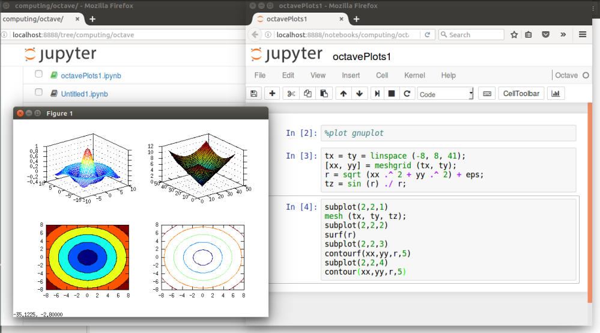

Octave Tutorial
About GNU Octave
- A high-level interpreted language
- primarily uses for numerical computations
- a tool of data visualization and manipulation
- Octave language is quite similar to Matlab
Install Octave Kernel
https://github.com/Calysto/octave_kernelContents
- Basic operations
- Functions
- Conditions
- Loops
- Plots
- Nummerical methods
- Complex Analysis

|
 |
|---|